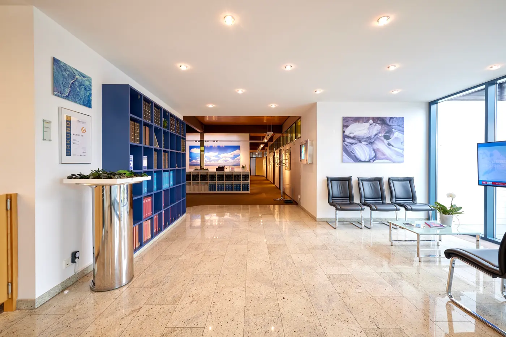
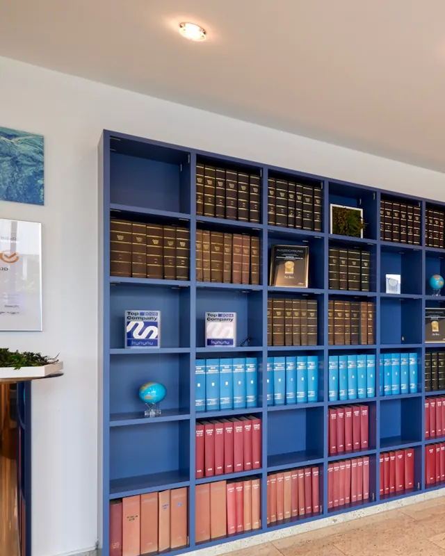
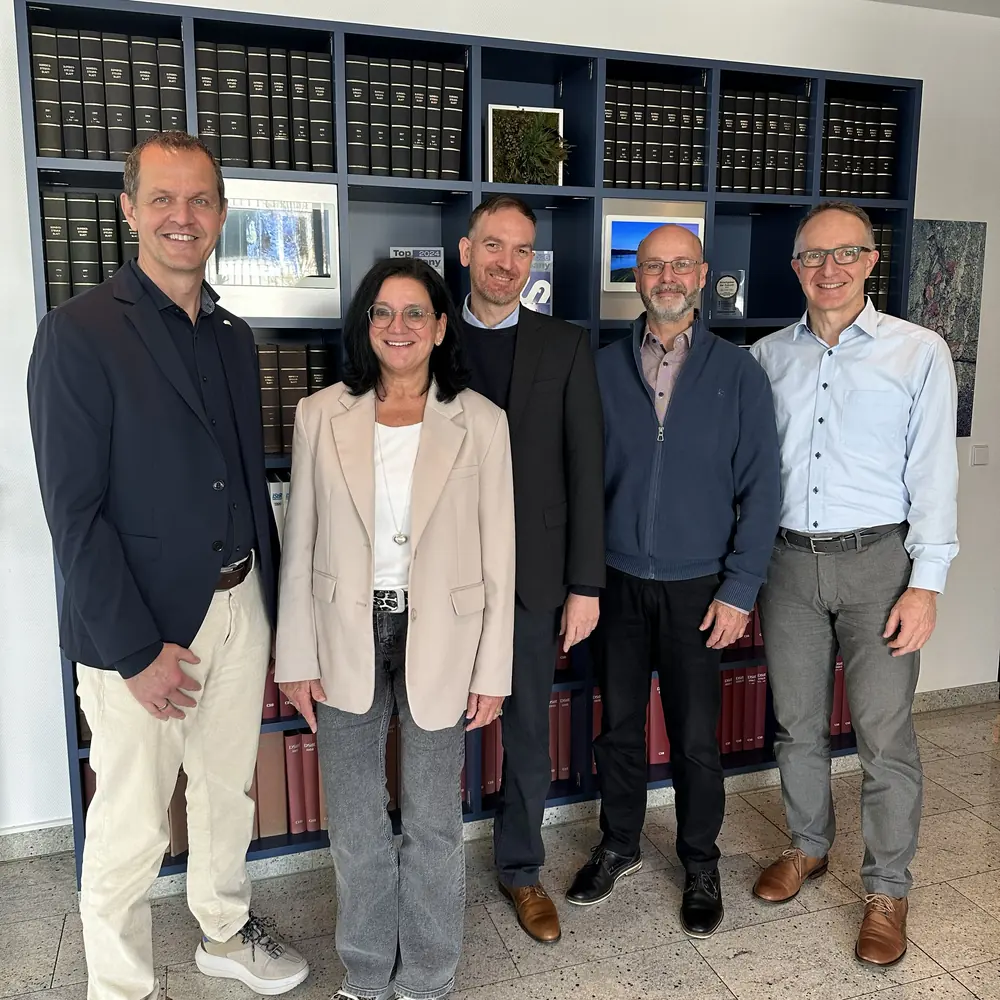

Peter Schmidt
Steuerberater
- Reorganisation von Unternehmensstrukturen
- Planung und Gestaltung der Unternehmensnachfolge
- Beratung von Stiftungen
Die Societät SJD berät seit 1962 Unternehmen, Familienbetriebe und Privatpersonen: sechs Steuerberaterinnen und Steuerberater, rund 50 Kolleginnen und Kollegen, ein Haus in der Esperantostraße.
Die sechs Steuerberaterinnen und Steuerberater der Societät SJD.
Kaum jemand ruft mit einem Fachbegriff an, sondern mit einer Situation. Hier sind die häufigsten – und was wir dann tun.
Wir übernehmen die Finanzbuchhaltung digital, mit Schnittstellen zu allen gängigen Buchhaltungssystemen, und liefern zeitnahe, aussagekräftige Auswertungen – statt Zahlen, die erst im Folgejahr kommen. Wenn Sie mit eigener Software buchen, unterstützen wir Sie im Tagesgeschäft.
Monatliche Abrechnung samt Melde- und Bescheinigungswesen, dazu die Kommunikation mit Finanzämtern, Rentenversicherungsträgern, Arbeitsagenturen und Kreditinstituten. Prüfungen können bei uns im Haus an eingerichteten Arbeitsplätzen zusammen mit den Prüfern abgewickelt werden.
Steuerberatung endet für uns nicht bei der Erfüllung von Pflichten. Wir schauen mit Ihnen auf den wirtschaftlichen Erfolg und die Wettbewerbsposition Ihres Unternehmens – und sagen Ihnen in klarer Sprache, was die Zahlen bedeuten.
Jahresabschlüsse nach handels- und steuerrechtlichen Vorschriften, auf Wunsch bis zum Konzernabschluss. Dazu die Steuererklärungen für Unternehmen und Privatpersonen und die Vertretung gegenüber der Finanzverwaltung.
Wir bereiten die Prüfung vor, begleiten sie und vertreten Sie gegenüber der Finanzverwaltung. Wenn eine Beurteilung strittig bleibt, auch im finanzgerichtlichen Verfahren.
Ob an die Familie, an langjährige Mitarbeiter oder an einen externen Käufer – jede Nachfolge hat ihre eigenen steuerlichen Besonderheiten. Isabelle Seiler ist Fachberaterin für Unternehmensnachfolge (DStV e. V.) und zertifizierte Testamentsvollstreckerin (AGT).
Grenzüberschreitende Gewinn- und Verlustverrechnung, Umsatzsteuer im EU-Binnenmarkt und die Gestaltung, Dokumentation und Durchsetzung von Verrechnungspreisen.
Was für das Einzelunternehmen gepasst hat, stößt mit wachsendem Umsatz und neuen Geschäftsfeldern an Grenzen. Wir begleiten Umwandlungen und Umstrukturierungen – und, wenn es soweit ist, den Verkauf. Alfred Huber ist Sachverständiger für Unternehmensbewertung.
Dazu kommt, was sich schlecht in eine Überschrift fassen lässt: die laufende steuerliche Beratung bei den Fragen, die sich täglich ergeben – der Anruf zwischen zwei Terminen, die kurze Einschätzung vor einer Unterschrift.

Die Societät besteht seit 1962, die Geschäftsführung in ihrer jetzigen Zusammensetzung seit 2011. Viele Mandanten sind seit Jahren und Jahrzehnten bei uns.
Alles liegt unter einem Dach in der Esperantostraße 7: Empfang und Wartezone, die Sachbearbeitung, die Fachbibliothek – und die eingerichteten Arbeitsplätze, an denen Betriebsprüfungen im Haus abgewickelt werden.

Die Fachbibliothek steht gleich im Empfang – nicht im Keller.
Einmal im Monat ein Mandantengespräch. Von Oktober bis Dezember das Jahresendgespräch.
Dazwischen erreichen Sie uns von Montag bis Freitag zwischen 7 und 19 Uhr – zwölf Stunden am Tag, in denen in der Esperantostraße jemand ans Telefon geht.
„Wir werden vom ganzen Team top betreut und das schon seit sehr vielen Jahren! Weiter so!“
„Wir sind mit Herrn Hilger als Steuerberater mehr als sehr zufrieden und können Herrn Hilger uneingeschränkt weiterempfehlen.“
„Herr Sturm ist ein super kompetenter Steuerberater der sich wirklich Zeit nimmt und alle Anliegen professionell löst. Sehr empfehlenswert“
„Seit Jahren bei der SJD & Herr Sturm, absolute Empfehlung.“
Zu fast jeder Spezialfrage sitzt jemand im Haus, der sich damit auskennt: Landwirtschaft, internationales Steuerrecht, Unternehmensbewertung, Nachfolge.

Montag bis Freitag, 07:00 – 19:00 Uhr